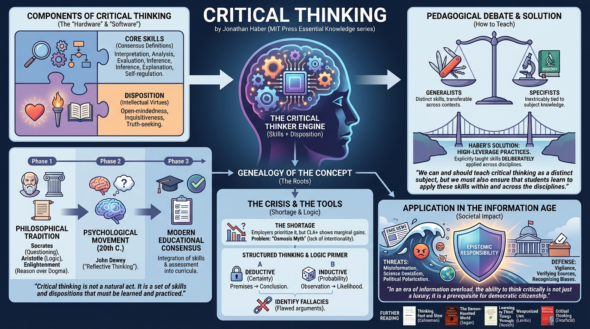

isbn-13: 9780262357357
Audible
AI Generated Content
Generated by gemini-3-pro-preview

Critical Thinking by Jonathan Haber (MIT Press Essential Knowledge series) provides a comprehensive overview of the history, definition, and application of critical thinking. The book examines how the concept evolved from ancient philosophy to modern educational psychology and analyzes the current state of critical thinking instruction in schools and universities. Haber argues for the necessity of structured critical thinking education to combat misinformation and political polarization.
Genealogy of the Concept
Haber traces the intellectual history of critical thinking through three distinct phases. The first is the philosophical tradition, beginning with Socrates and his method of questioning, moving through Aristotle’s logic, and continuing to Enlightenment thinkers who emphasized reason over dogma. The second phase is the psychological movement of the 20th century, heavily influenced by John Dewey, who termed it “reflective thinking.” The third phase involves the modern educational consensus, specifically the integration of skills and assessment into curricula.
“Critical thinking is not a natural act. It is a set of skills and dispositions that must be learned and practiced.” (Introduction)
Components of Critical Thinking
The author deconstructs critical thinking into distinct components rather than treating it as a vague notion of intelligence. He relies on consensus definitions, such as those from the 1990 Delphi Report, to identify core skills: interpretation, analysis, evaluation, inference, explanation, and self-regulation. Crucially, Haber emphasizes that possessing the skills is insufficient without the disposition to use them. A critical thinker must possess “intellectual virtues” such as open-mindedness, inquisitiveness, and truth-seeking.
The Generalist vs. Specifist Debate
A central theme in the book is the pedagogical debate regarding how critical thinking should be taught. “Generalists” believe critical thinking is a distinct set of skills that can be taught independently (e.g., a Logic 101 course) and applied across contexts. “Specifists” argue that thinking skills are inextricably tied to subject matter knowledge (e.g., thinking critically about biology requires deep knowledge of biology). Haber navigates this by proposing “High-Leverage Critical Thinking Practices”—skills that are explicitly taught but deliberately applied across different disciplines to ensure transferability.
“We can and should teach critical thinking as a distinct subject, but we must also ensure that students learn to apply these skills within and across the disciplines.” (Chapter 3)
The Critical Thinking Shortage
Haber addresses the perceived “crisis” in critical thinking. He notes that while educators and employers almost universally list critical thinking as a top priority, actual assessment results (such as the CLA+) show that college students often make only marginal gains in these skills during their education. He attributes this to a lack of intentionality in instruction; educators often assume students absorb these skills through osmosis rather than through explicit instruction.
Structured Thinking and Logic
The book provides a primer on the mechanics of logical reasoning, distinguishing between deductive reasoning (certainty based on premises) and inductive reasoning (probability based on observation). Haber explains the structure of arguments and the importance of identifying logical fallacies. He argues that understanding these structures is essential for media literacy.
Application in the Information Age
The final sections of the book discuss the societal implications of a lack of critical thinking. Haber connects the decline in critical thinking skills to the rise of “fake news,” science denialism, and political polarization. He posits that the modern information ecosystem requires a higher level of vigilance and “epistemic responsibility” from citizens to verify sources and recognize their own cognitive biases.
“In an era of information overload, the ability to think critically is not just a luxury; it is a prerequisite for democratic citizenship.” (Chapter 5)
Further Reading
- Thinking, Fast and Slow by Daniel Kahneman
- The Demon-Haunted World: Science as a Candle in the Dark by Carl Sagan
- Learning to Think Things Through: A Guide to Critical Thinking Across the Curriculum by Gerald M. Nosich
- Weaponized Lies: How to Think Critically in the Post-Truth Era by Daniel J. Levitin
- Critical Thinking: Your Guide to Effective Argument, Successful Analysis and Independent Study by Tom Chatfield